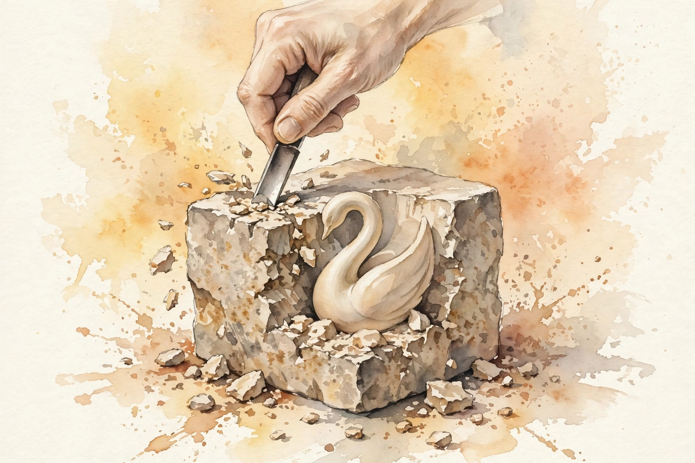

Interactive companion
Subtraction Neglect

The instinct to add
Think of the last time you tried to improve something. Perhaps a presentation at work. You read the slides, and your first instinct was to add a chart, a footnote, or a new slide to explain the previous one.
Source fact This reflex runs so deep that you do not notice it. The episode names it subtraction neglect: the automatic impulse to solve a problem by addition, even when the better move is to take something away.
“We add. We rarely subtract.”
Narration, Hidden Brain episode 1
The exam that changed a career
At the University of Virginia, an engineer named Leidy Klotz studies this reflex and has done so for years. His own story starts in an undergraduate mechanics classroom, where he carried a C average and faced the real risk of failing the course.
Before the third exam he changed tactics. He stopped cramming dozens of equations. He reduced mechanics to one equation he trusted: force equals mass times acceleration. He walked into the exam carrying less in his head than any of his classmates.
Professor Viscomi wrote two numbers on the chalkboard: 98 and 47. Every classmate assumed the 98 belonged to someone else. Klotz earned the 98.
Nugget 1 · The 98 and the 47
Less in the head beat more in the head
What happened. A struggling engineering student replaced dozens of memorized equations with one deeply understood law, and scored 98 on the exam.
Why it matters. The win came from removal, not accumulation. Deep command of one thing beat shallow storage of many.
The principle. When a system feels crowded, ask what you can remove before you ask what you can add.
Source: episode transcript, 00:02:35. Source fact
The Duplo bridge
Years later Klotz built a bridge from Duplo blocks with his three-year-old son Ezra. The two support towers stood at different heights, so the bridge would not sit level.
Klotz moved to add a block to the shorter tower. Before he could act, Ezra removed a block from the taller tower. The bridge sat level.
Klotz tested the same instinct on colleagues, students, and a professor he describes as a genius. Everyone added. The defect was not a quirk of personality. It lived in nearly all of them.
Nugget 2 · The bridge
The child saw the move the expert missed
What happened. A three-year-old fixed an uneven bridge by removing a block. His engineer father moved to add one.
Why it matters. Expertise did not protect Klotz from the reflex. The child had not yet learned the rule that broken means add.
The principle. Watch beginners. They still see the moves that training hides.
Source: episode transcript, 00:03:22. Source fact
The Nature experiments
Klotz turned the question into lab work. In research published in Nature in 2021, his team showed volunteers a digital grid of colored squares and asked them to make it symmetrical. Volunteers could add squares or remove them. Most added. The moment subtraction was named as an option, people took it. The problem was that subtraction had not occurred to them.
The pattern held across domains. Asked to improve a short essay, only 17 percent of people subtracted words. The other 83 percent made it longer. Asked to improve a five-ingredient recipe, only 2 out of 90 volunteers removed an ingredient. Given loops of musical notes to improve, people were three times more likely to add notes than to remove them.
“Omit needless words.”
Strunk and White, The Elements of Style, quoted in the episode
Klotz built one more test from a disagreement with his wife, who likes to pack family trips with activity. He drafted a fictional 14-hour day in Washington, D.C.: the White House, the National Cathedral, the Old Post Office, the Lincoln Memorial, the Vietnam Veterans Memorial, a museum, shopping, lunch at a five-star bistro. Travel time alone, under optimal traffic, would exceed two hours. Volunteers could rearrange, add, or remove items. Only one in four removed anything. Most added to a schedule that was already impossible to complete.
Asked to improve it, almost nobody subtracted
Share of volunteers who chose subtraction in each task
Source: episode transcript, 00:04:09 to 00:06:07. Music share derived from the stated 3-to-1 ratio. Source fact
Nugget 3 · The 17 percent
The barrier is attention, not preference
What happened. Across essays, recipes, music, and travel plans, the large majority improved things by adding. Subtraction rarely occurred to people until it was suggested.
Why it matters. People do choose subtraction once the option enters the frame. The defect is in what comes to mind.
The principle. When you want better, name subtraction as an option out loud before you start.
Source: episode transcript, 00:04:09. Lab work published in Nature, 2021. Source fact
Why the mind reaches for more
Part of the answer sits in biology. At the University of Michigan, psychologist Stephanie Preston studies acquisitiveness, the drive to get and keep things. In one study volunteers viewed more than 100 objects on a screen, from bananas and coffee mugs to used sticky notes and outdated newspapers, and chose which to acquire. People wanted dozens of objects they had no use for. Then they had to fit everything into one digital grocery bag. Many failed.
Acquiring things activates the brain reward pathway, the same system stimulated by cocaine. Adding feels like a win, like progress, like abundance. Subtraction feels like a loss, and humans resist losses hard.
Culture adds pressure on top of biology. We build plaques for people who construct skyscrapers and name buildings after donors. Politicians cut ribbons on new hospitals and highways. Nobody cuts a ribbon on a decrepit building after its removal. The episode traces this back to the earliest civilizations: the pyramids of Egypt and the ziggurats of Mesopotamia exceeded any practical function, and addition became the deep grammar of power.
Klotz saw the same pattern at his own university. Asked for 750 ideas to improve the University of Virginia, fewer than 10 percent suggested taking something away. People proposed more grants, more services, more housing. One person requested a new ice arena.
Interpretation There is also a cold logic to it. Walk into an organization and propose a cut, and you challenge someone pet project and make enemies. Propose an addition and you carry almost no social risk. Subtraction also demands that you understand the system deeply enough to know what is redundant. Addition demands no such homework.
Nugget 4 · The reward pathway
The urge to add is chemical
What happened. Volunteers collected objects they did not need, then could not fit them into one bag. Acquisition lights up the brain reward pathway.
Why it matters. The urge to add is chemical, not just cultural. You fight it with structure, not willpower.
The principle. Do not argue with the craving to add. Build rules that make subtraction the default.
Source: episode transcript, 00:06:28. Source fact
The earthquake exception
Subtraction sometimes needs an external push. The episode calls it an external executioner. Consider the Embarcadero Freeway in San Francisco: a double-decker concrete structure, more than a mile long, blocking the waterfront from the bay.
In the mid-1980s planners proposed tearing it down. Voters rejected the plan two to one. A Pulitzer-winning columnist, Herb Caen, dismissed the idea in print:
“An even worse idea than building it.”
Herb Caen, San Francisco Chronicle, quoted in the episode
Then on October 17, 1989, the Loma Prieta earthquake struck. It killed more than 60 people and injured thousands. The freeway did not collapse, but it became unusable. For the first time, the city saw life without it. People found other routes. The waterfront came back. Housing and jobs increased. By 2000, almost nobody called the removal a mistake.
Nugget 5 · The external executioner
Proof arrives only after the removal
What happened. Voters rejected freeway removal two to one. An earthquake made the freeway unusable, the city adapted, and removal became obviously right.
Why it matters. People cannot picture life after subtraction until they live it. Debate rarely supplies the proof.
The principle. If you cannot imagine the cut, run a trial. A temporary removal teaches what argument cannot.
Source: episode transcript, 00:10:14. Source fact
Tools that force subtraction
Science suggests we need not wait for a crisis. We can build structures that force subtraction into decisions. Klotz keeps a stop-doing list: the mirror of a to-do list, a catalog of things he will quit.
His version for student writing is stop editing. He caps himself at the 10 most important comments per draft. The cap saves him time, and it rewards students who submit polished work instead of spending equal effort on rough drafts.
Lawmakers now copy the move. Some places now require legislators who propose a new law to name an existing law for removal. The rule makes subtraction socially acceptable by making it procedural.
Nugget 6 · The stop-doing list
Caps turn courage into routine
What happened. Klotz caps his editing at 10 comments per draft and keeps a list of things to quit.
Why it matters. Caps convert subtraction from a brave choice into a routine. The structure carries the decision.
The principle. Pair every to-do list with a stop-doing list. Pair every addition with a named removal.
Source: episode transcript, 00:11:57. Source fact
Subtraction that works
At Johns Hopkins, researcher Peter Pronovost studied catheter-related infections, which caused roughly 30,000 deaths in the United States every year, about as many as car crashes. The insertion process ran to dozens of steps, each demanding judgment.
Pronovost replaced the complexity with a five-step checklist: wash hands with soap, clean the skin with antiseptic, cover the patient with sterile drapes, wear a sterile mask, hat, gown, and gloves, and cover the catheter site with a sterile dressing. Five steps. People stopped dying.
In 1927 Anna Keichline, the first female licensed architect in Pennsylvania, asked whether building blocks needed to be solid. Her hollow block removed half the material. It cost less, weighed less, needed less fuel to transport, insulated better through its air voids, and resisted fire. Its descendant, the hollow concrete masonry unit, ranks among the most used building materials on earth.
The Strider bike asked what happens when you subtract the pedals and the drivetrain entirely. Toddlers propel the small bike by striding with their legs. Children as young as a year and a half can ride, and they learn balance so well that training wheels become unnecessary.
Nugget 7 · The five-step checklist
Remove steps before you add training
What happened. Pronovost cut dozens of judgment-heavy steps to five checklist steps. Catheter infection deaths fell.
Why it matters. Subtraction in a high-stakes process does not lower standards. It makes the essential impossible to miss.
The principle. When errors come from complexity, remove steps before you add training.
Source: episode transcript, 00:13:28. Source fact
The noticeability problem
Even successful subtraction faces a final problem: noticeability. When you add something, everyone can see it. When you subtract something, the evidence disappears by definition.
In the 1970s aerospace engineer Marion Rudy proposed cushioning running shoes with air: less material inside, more performance. Shoe companies could not see the value until Nike agreed. The Air Max 1 cut a window into the sole so runners could see the air inside. Nike made the absence of material visible.
Marie Kondo built an empire on the same move. She flipped the tidying question from what to discard to what to keep:
“Keep what sparks joy and get rid of everything else.”
Marie Kondo, via the episode
Interpretation The outcome matches the old advice. What changes is where attention goes, and that changes everything.
The stripped-down record
When Bruce Springsteen recorded Darkness on the Edge of Town in 1978, he wrote more than 50 songs. Only 10 made the record. The cut songs were not bad. Patti Smith took Because the Night to number 13. The Pointer Sisters took Fire to number 2. Springsteen gave away top-20 singles before he placed one there himself.
He called the album his samurai record, stripped down for fighting. Its plainspoken opener, Racing in the Street, starts with a 69 Chevy and a 396 engine. Compare that with the word cascade that opens his debut album. Same songwriter, a few years apart. The later record wins because of what left the room.
“To attain knowledge, add things every day. To attain wisdom, subtract things every day.”
Attributed to Lao Tzu, quoted in the episode
Picasso defined art as the elimination of the unnecessary. Antoine de Saint-Exupery wrote that perfection arrives not when nothing more can be added, but when nothing is left to take away. Klotz, his son Ezra, and a chalkboard with two numbers all point the same way.
Watch the episode
Official Hidden Brain episode video for Subtraction Neglect.The official Hidden Brain episode video, embedded via youtube-nocookie.com, the only external dependency on this page.
Nugget index
- Nugget 1. Less in the head beat more in the head (The exam that changed a career)
- Nugget 2. The child saw the move the expert missed (The Duplo bridge)
- Nugget 3. The barrier is attention, not preference (The Nature experiments)
- Nugget 4. The urge to add is chemical (Why the mind reaches for more)
- Nugget 5. Proof arrives only after the removal (The earthquake exception)
- Nugget 6. Caps turn courage into routine (Tools that force subtraction)
- Nugget 7. Remove steps before you add training (Subtraction that works)